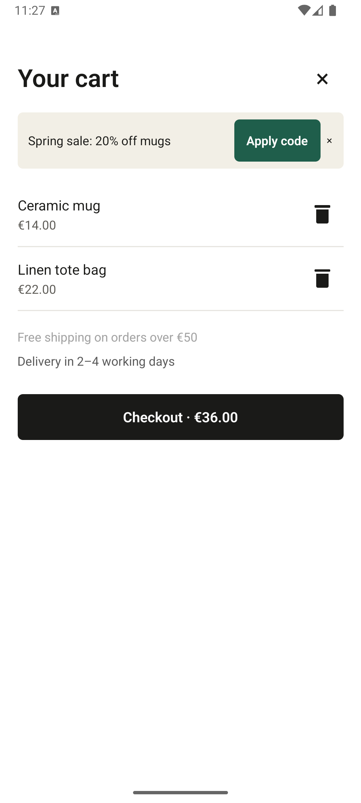

3Text contrast is too low
ERROR · WCAG 1.4.3 · seed-low-contrast
"Free shipping on orders over €50" is #A3A3A3 on white: 2.52:1, needs 4.5:1.
Fix: color: '#595959'
Each tile shows the same real content: the rn-shop scan from 27 October 2026, with its three findings. Pick one, or name parts to mix. Every text colour pair reaches WCAG AA in both themes, measured with Pragu's own contrast function; the ratios on the swatches are the light-theme values.
Direction A
Precise. Technical. Calm.
An architect's sheet with a redline pass. The report feels like a reviewed drawing; findings are corrections marked in red pen.

ERROR · WCAG 1.4.3 · seed-low-contrast
"Free shipping on orders over €50" is #A3A3A3 on white: 2.52:1, needs 4.5:1.
Fix: color: '#595959'
Memorable detail: dimension labels on the callouts ("16 × 16 dp"), like measurements on a drawing.
Direction B
Legible. Bold. Unmissable.
Wayfinding signage for accessibility. Set in Atkinson Hyperlegible, designed by the Braille Institute for readers with low vision: the report practises what it preaches.
ERROR WCAG 1.4.3 · seed-low-contrast
"Free shipping on orders over €50" is #A3A3A3 on white: 2.52:1, needs 4.5:1.
Fix: color: '#595959'
Memorable detail: black-and-yellow sign plates that stay readable on any app screen. Yellow is only ever a fill behind black text.
Direction C
Warm. Editorial. Human.
The prag itself: each screen sits on a heavy sill, findings step up from it. Warm paper and deep green, closest to your own design defaults.
Error · WCAG 1.4.3 · seed-low-contrast
"Free shipping on orders over €50" is #A3A3A3 on white: 2.52:1, needs 4.5:1.
Fix: color: '#595959'
Memorable detail: the sill under every screenshot; numbered tabs rise from the findings like steps.